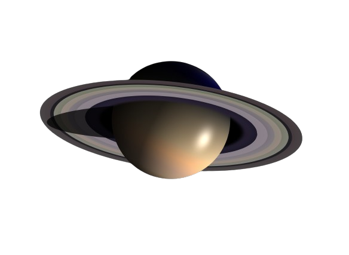

|  |
|
Saturno no es el único planeta que tiene anillos, pero definitivamente tiene los más bellos. Los anillos que vemos están compuestos por grupos de pequeños aros que rodean a Saturno. Están hechos de pedazos de hielo y roca. Como Júpiter, Saturno es una pelota de hidrógeno y helio, en gran parte. Cuando Galileo Galilei vio a Saturno a través de un telescopio en el siglo XVII, no estaba seguro de lo que estaba viendo. Al principio, creyó que estaba mirando tres planetas, o un planeta con asas. Ahora, sabemos que esas "asas" eran los anillos de Saturno. |